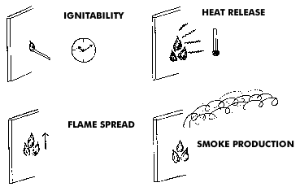

Building Fires & Fire Resistant Levels (FRL)1. Two stages in building firesThe two stages to be considered in the fire safety design of buildings in relation to building materials and structures are the initial and the fully developed fire. In the initial fire, the building contents such as furniture etc, are of major importance both for the initiation of the fire and its development, but this is not regulated in building codes. Surface linings may also play an important role in the initial fire, especially in escape routes and limitations of their reaction to fire is required in most building codes. In the fully developed fire, the performance of load bearing and separating structures is important in order to limit the fire to the room or fire compartment of origin. This is called the fire resistance of the building structure.
Figure 1. Two main stages relevant for the fire safety in buildings in relation to building materials and structures. 2. Reaction to fire - Material propertiesReaction to fire means the response from materials to an initial fire attack and includes properties like time to ignition, flame spread, heat release and smoke production, see Figure 2. These properties are relevant in the early fire development, which is the stage when products such as wood may contribute to fires. The use of combustible linings in escape routes and public areas in buildings is restricted in order to limit the rate of fire growth, but the contribution from linings is often overemphasised in relation to the total fire potential of building content. Four areas of concern in a materials reaction to the development of a fire are:  Figure 2. Reaction to fire properties of surface products. 3. Fire resistance - Structural fire performanceFire resistance means that structural elements, e g wall or flooring elements, shall withstand a fully developed fire and fulfil requirements of insulation, integrity and/or load bearing capacity, see Figures 2 & 3 Fire Resistance Level (FRL):The fire-resistance grading period in minutes for an element of construction, component or structure, determined in accordance with the BCA and AS 1530, for;
and expressed in that order eg 60 / 60 / 30 60 minutes structural adequacy 60 minutes integrity 60 minutes insulation Figure 3. Performance criteria for fire resistance. These tests specify a fire exposure with ever increasing temperatures, which building elements are expected to withstand for a specified period of time, e.g. 60 minutes. Although considered highly combustible wood structures can obtain high fire resistance, e g 60 minutes, 90 minutes or even higher. Fire testsThe fire hazard of building products is evaluated by the use of standard fire tests in order to satisfy requirements in national building codes. The fire tests used must be relevant to the end use of a product, e g a wall or ceiling lining or a structural element. Australian Fire Standards (Parts of AS 1530) AS 1530.1-1994 : AS 1530.2-1993 : AS/NZS 1530.3:1999 : AS 1530.4-2005 : AS 1530.7-2007 :
|